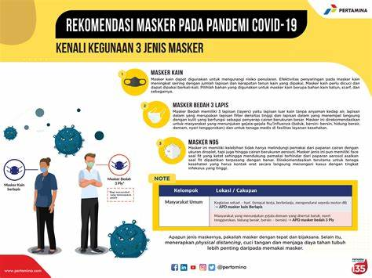

Perayaan Tahun Baru di Tengah Pandemi
Pemerintah telah mengeluarkan aturan khusus untuk pencegahan Covid-19 pada masa Hari Raya Natal dan Tahun Baru. Aturan ini merupakan tindak lanjut dari rencana pemerintah untuk memberlakukan Pembatasan Kegiatan Masyarakat (PPKM) Level 3 untuk seluruh wilayah Indonesia selama Natal dan Tahun Baru. PPKM Level 3 akan mulai berlaku di seluruh Indonesia pada 24 Desember 2021 sampai 2 Januari 2022. Melalui Instruksi Menteri Dalam Negeri (Inmendagri) Nomor 62 Tahun 2021, pemerintah berharap bisa mencegah gelombang baru Covid-19 yang biasanya muncul setelah periode libur panjang.